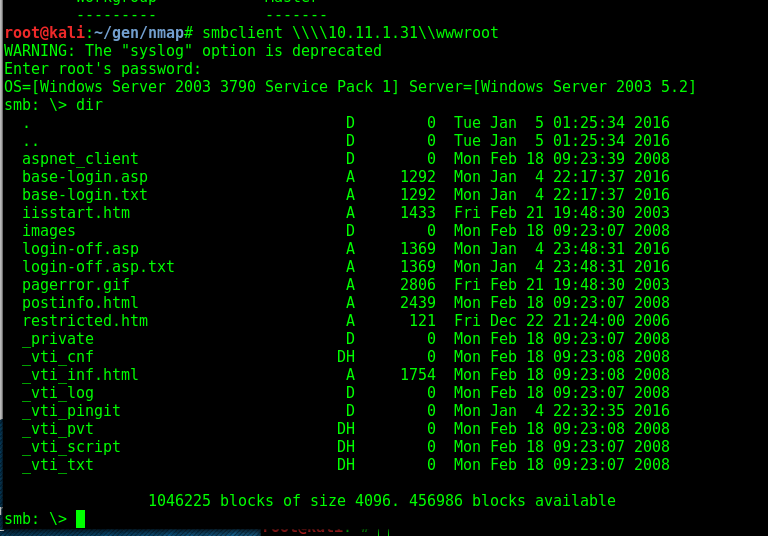

https://www.adampalmer.me/iodigitalsec/2013/08/10/accessing-and-hacking-mssql-from-backtrack-linux/
to root:
root@kali:~/gen/nmap# sqsh -S 10.11.1.31
sqsh-2.1.7 Copyright (C) 1995-2001 Scott C. Gray
Portions Copyright (C) 2004-2010 Michael Peppler
This is free software with ABSOLUTELY NO WARRANTY
For more information type '\warranty'
xp_
msf auxiliary(ms12_020_check) > set rhosts 10.11.1.31
rhosts => 10.11.1.31
msf auxiliary(ms12_020_check) > exploit
[+] 10.11.1.31:3389 - 10.11.1.31:3389 - The target is vulnerable.
[*] Scanned 1 of 1 hosts (100% complete)
[*] Auxiliary module execution completed
msf auxiliary(ms12_020_check) > search CVE-2012-0002
